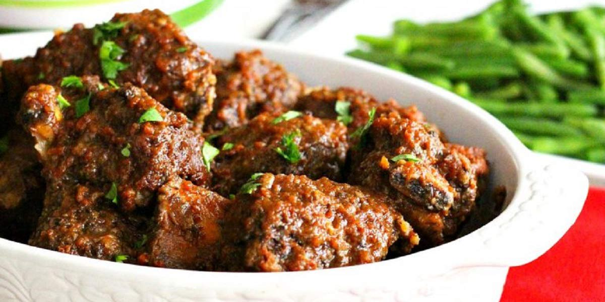

Braised Beef
Recipe Specification
Ingredients List
| Ingredients | Quantity |
|---|---|
| Beef Chuck | 1.3kg |
| Vegetable Oil | 90ml |
| Ground Cumin | 1 tsp |
| Smoked Paprika | 1 tsp |
| Table Salt | 2 tsp |
| Cracked Black Pepper | 1 tsp |
| White Onions | 1x1 |
| Garlic Cloves | 2 Cloves |
| Red Wine | 180ml |
| Beef Stock | 100ml |
Yield: 5-6 portions
Preparation
- Peel and finely dice white onion.
- Peel and crush garlic cloves.
- Cut beef chuck into 2 inch pieces.
- Pre-heat oven to 160’C.
Cooking Instructions
- Place a large saucepan over a medium /high heat and add half the vegetable oil.
- Brown beef chuck in pan and set aside.
- Add sliced onions to same pan and fry for 2-3 minutes..
- Coat beef with cumin powder, smoked paprika, salt and pepper before mixing.
- Place sweated onions on the base of a deep baking dish, followed by chunks of beef chuck, crushed garlic, red wine and beef stock.
- Cover baking dish 2 layers of foil and place in the oven 1 and ½ hours.
- Remove foil and cook for a further 30 minutes in the oven.

Serving Suggestions
Serve braised beef with creamy mash.
Storing instructions
Allow to cool to room temperature. Consume within 4 days of making. Store in the fridge
Reheating Instructions
Place in the microwave for 2-3 minutes.